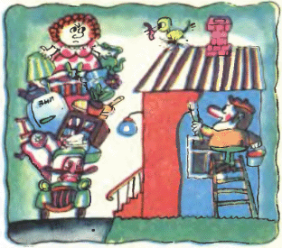
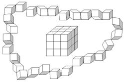
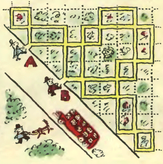

Задача 10.1. Когда Петя начал решать эту задачу, он заметил, что часовая и минутная стрелки его часов образуют прямой угол. Пока он решал ее, угол все время был тупым или развёрнутым, а в тот момент, когда Петя закончил решение, угол снова стал прямым. Сколько времени Петя решал эту задачу?
Задача 10.2. В какое наибольшее число цветов можно раскрасить шахматную доску 8 × 8 так, чтобы каждая клетка граничила по стороне хотя бы с двумя клетками своего цвета? (Каждая клетка закрашивается целиком в один цвет.)
Задача 10.3. Вдоль аллеи стоят 20 столбиков, каждый из которых имеет высоту 1 м, 2 м или 3 м. Вася, пока шёл в одну сторону, насчитал 13 пар соседних столбиков, в которых первый столбик был ниже второго. Когда он шёл обратно, то насчитал 5 таких пар. Не ошибся ли Вася в расчётах?
Задача 10.4. На плоскости проведено 100 прямых. Оказалось, что среди любых четырёх из них найдутся две параллельных. Докажите, что среди любых семи из них найдутся три параллельных.
Задача 10.5. В городе Васюки каждая семья занимала отдельный дом. В один прекрасный день каждая семья переехала в дом, ранее занятый другой семьей. В ознаменование этого дня Васюксовет решил покрасить все дома в красный, синий или жёлтый цвета, причём так, чтобы ни для какой семьи цвета старого и нового домов не совпадали. Удастся ли Васюксовету это сделать?
Задача 10.6. 60 детей построились парами и пошли в музей. По пешеходному переходу они шли толпой, а после него снова построились парами (но некоторые пары могли стать другими). Докажите, что в музее детей можно разбить на три равные группы так, что дети в одной группе ни разу не были в одной паре.
Задача 10.7. С крыши дома на землю спущена лестница. На каждой её ступеньке укреплен указатель-стрелка, направленный либо вверх, либо вниз. В начальный момент на одной из ступенек лестницы стоит человек. Далее он передвигается на соседнюю ступеньку в соответствии с указателем, после чего этот указатель меняет направление на противоположное. Со следующей ступеньки человек опять переступает на соседнюю в соответствии с её указателем, после чего этот указатель тоже меняет положение на противоположное. Далее он снова и снова переходит со ступеньки на ступеньку по таким же правилам. Докажите, что при любых начальных направлениях стрелок и любом исходном положении человек рано или поздно сойдёт с лестницы либо на крышу, либо на землю.
Задача 10.8. На длинной скамейке сидели мальчик и девочка. К ним по одному подошли еще 20 детей, и каждый из них садился между какими-то двумя уже сидящими. Назовём девочку \it отважной, если она садилась между двумя соседними мальчиками, а мальчика – \it отважным, если он садился между двумя соседними девочками. Когда все сели, оказалось, что мальчики и девочки сидят на скамейке, чередуясь. Сколько из них были отважными?
Дополнительные задачи
Задача 10.9.
Имеется набор из двух карточек: \fbox\Large \mathbf 1 и \fbox\Large \mathbf 2. За одну операцию разрешается составить выражение, использующее числа на карточках, арифметические действия, скобки. Если его значение – целое неотрицательное число, то его выдают на новой карточке. (Например, имея карточки \fbox\Large \mathbf 3, \fbox\Large \mathbf 5 и \fbox\Large \mathbf 7, можно составить выражение \fbox\Large \mathbf 7 \fbox\Large \mathbf 5 : \fbox\Large \mathbf 3 и получить карточку \fbox\Large \mathbf 2\mathbf 5 или составить выражение \fbox\Large \mathbf 3\fbox\Large \mathbf 5 и получить карточку \fbox\Large \mathbf 3\mathbf 5.)
Как получить карточку с числом 2018
а)
за 4 операции;
б)
за 3 операции?
Задача 10.10. Петя утверждает, что он сумел согнуть бумажный равносторонний треугольник так, что получился четырёхугольник, причём всюду трёхслойный. Как это могло получиться?
Задача 10.11. 27 единичных кубиков просверлены по диагонали и плотно нанизаны на нить, которую затем связали в кольцо, то есть, вершина первого кубика соединилась с вершиной последнего. Можно ли такое «ожерелье» упаковать в кубическую коробку с ребром длины 3?
Задача 10.12. Два джентльмена одновременно вошли в парк: один в пункте A, а другой — в пункте B (см. план парка на рисунке, жирным выделены дорожки). Каждый джентльмен решил обойти этот парк, пройдя по одному разу по каждой дорожке. Докажите, что если они всё время будут идти с одинаковыми скоростями, то обязательно встретятся.